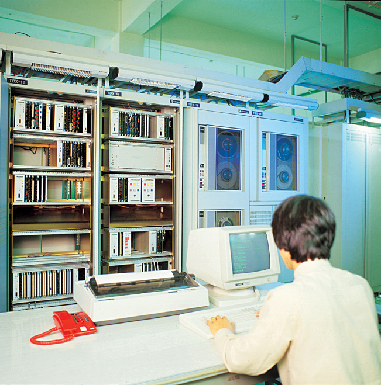
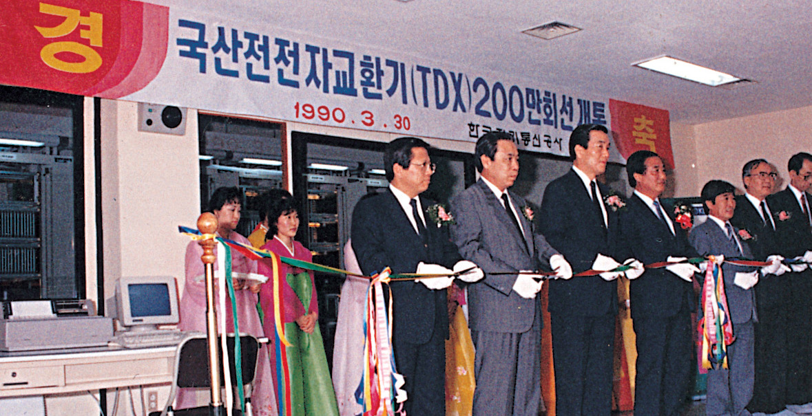

휴대전화가 없던 시절, 멀리 있는 사람에게 전화를 걸려면 먼저 전화기가 있는 곳을 찾아야 했다. 집이나 사무실의 유선전화, 거리의 공중전화가 사람과 사람을 이어주는 수단이었다. 언제 어디서나 자유롭게 연결되는 이동통신은 아직 머나먼 미래였다. 그 시절 대한민국의 연구자들은 그 미래를 현실로 만들기 위해 밤낮없이 연구했다. 지금 우리가 스마트폰으로 손쉽게 누군가와 연결될 수 있는 것은, 그때 누군가가 아무도 가보지 않은 길을 먼저 만들었기 때문이다.
세계 최초라는 새로운 길
2001년, 제42회 3·1문화상 기술상 수상자로 당시 현대전자산업 박항구 부사장(현 소암시스텔 회장)이 선정됐다. 박항구 회장은 1980년대 TDX-10 계열 전전자교환기 개발사업과 CDMA 디지털 이동통신 시스템 개발사업을 이끈 연구자였다. TDX는 전화 통화를 연결·교환하는 통신 시스템이고, CDMA는 여러 사람이 하나의 통신망을 효율적으로 공유할 수 있도록 한 디지털 이동통신 기술이다.

TDX 개발에는 당시 정부 예산 240억 원이 투입됐다. 지금의 감각으로 보면 엄청난 규모의 연구개발 투자였지만, 당시에는 성공이 불투명한 기술에 국가적 역량을 투입해야 하는 도전이었다. 실제 개발 과정도 순탄하지 않았다. 고온 환경 시험과 낙뢰에 따른 장비 파손, 현장 설치 뒤 반복되는 장애를 하나씩 해결해야 했다. 연구진은 밤을 새워 시험하고, 시험실에 마련된 침대에서 잠깐 눈을 붙인 뒤 다시 연구에 뛰어들었다고 한다. 그렇게 만들어진 TDX는 국내 통신 인프라의 핵심으로 자리 잡았고, 농어촌 전화 현대화에도 기여했다.
TDX에서 쌓은 기술 역량은 CDMA라는 또 하나의 도전으로 이어졌다. 1996년 세계 최초 CDMA 상용화에 성공한 대한민국은 이동통신 기술의 변방에서 세계의 주목을 받는 위치로 올라섰다. 2001년 당시 국내 CDMA 가입자는 2,700만 명에 이르렀고, 시스템과 단말기를 합쳐 거대한 통신산업 시장이 형성되고 있었다. 연구실 안에서 성공 여부조차 장담할 수 없었던 기술이 불과 몇 년 만에 국민의 일상과 산업의 풍경을 바꾸고 있었던 것이다.
신기술에서 기술유산으로

2024년, CDMA 상용화 기술은 국제전기전자공학자협회(IEEE) 마일스톤에 등재됐다. IEEE 마일스톤은 전기·전자·전산 분야에서 인류와 산업 발전에 기여한 기술적 성과를 기념하는 프로그램으로, 우리나라 기술로는 처음이었다. 한때 ‘신기술’이었던 CDMA가 이제는 기억하고 보존해야 할 ‘기술유산’이 된 순간이다.
돌이켜보면 2001년 3·1문화상 기술상이 주목했던 것은 하나의 제품이나 특정한 기술만이 아니었다. 아직 아무도 가보지 않은 길을 선택하고, 실패의 가능성을 감수하면서도 우리 손으로 기술을 만들어내려 했던 시간과 사람들에 대한 기록이었다. 한 시대가 다음 시대에 남겨주는 것은 완성된 기술만이 아니다. ‘우리도 할 수 있다’는 믿음, 아무도 가보지 않은 길을 선택하는 용기, 그리고 아직 오지 않은 미래를 오늘의 노력으로 당겨오는 집념이다.
2001년의 기술상에서 2026년의 AI 시대까지. 한때 ‘신기술’이었던 것이 ‘기술유산’이 된 지금, 다시 묻게 된다. 지금 우리가 미래라고 부르는 것은, 훗날 어떤 유산으로 남게 될 것인가.